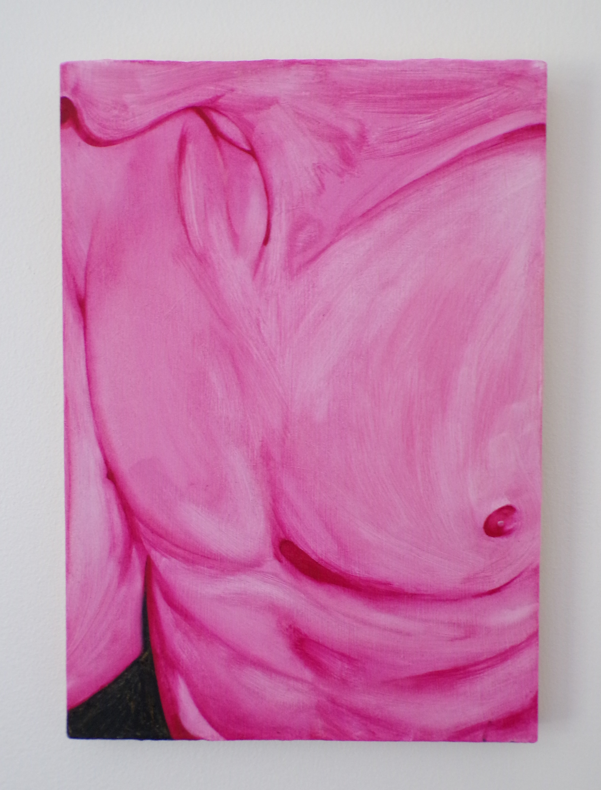
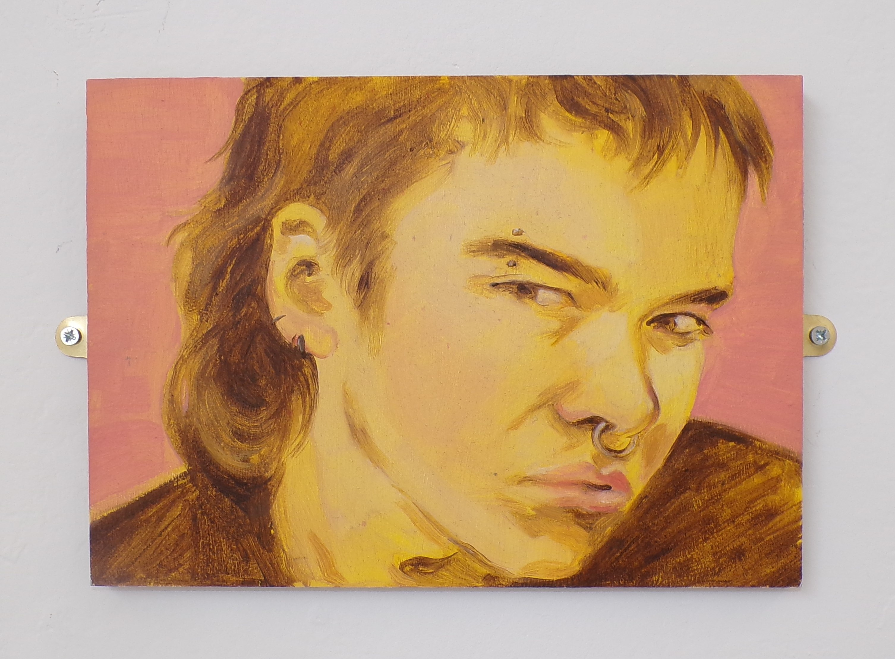
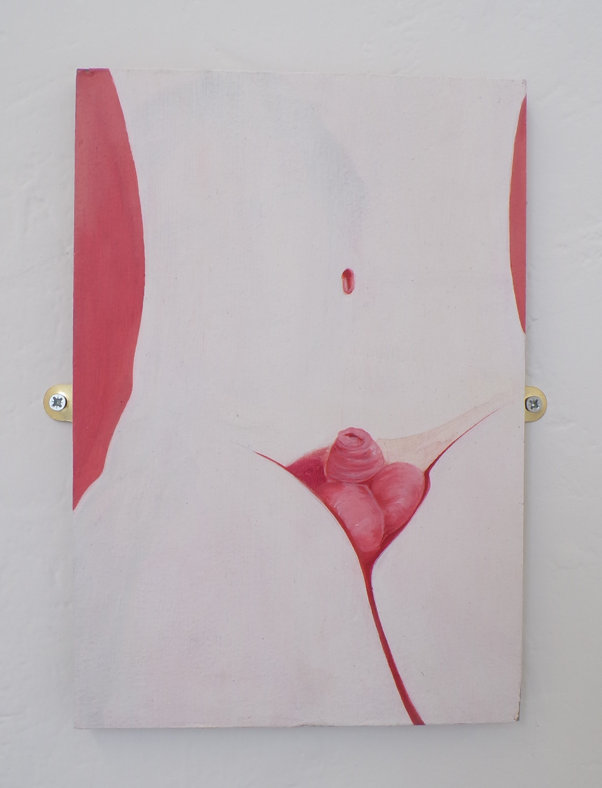
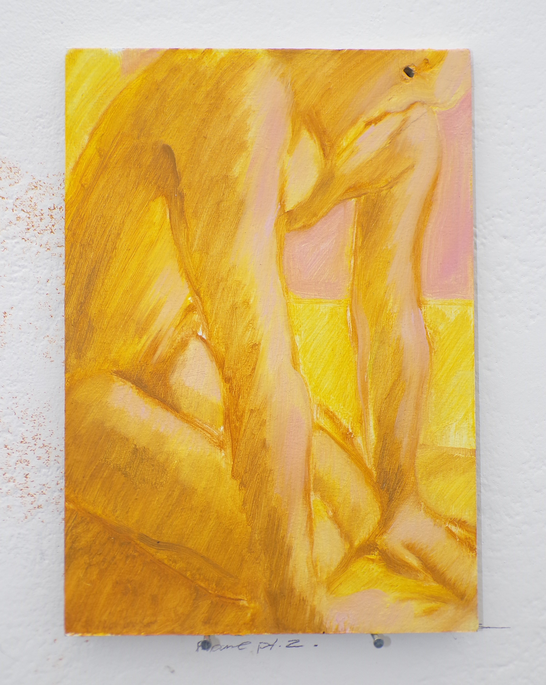

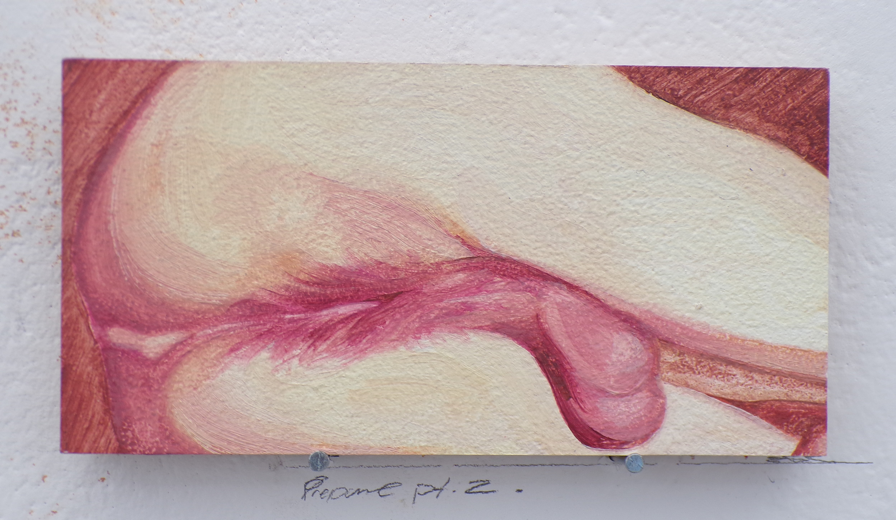
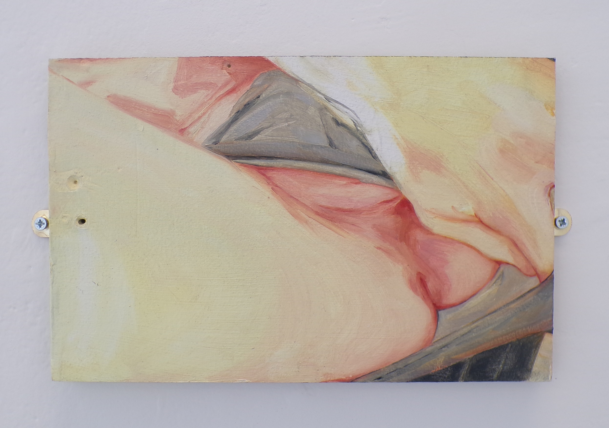

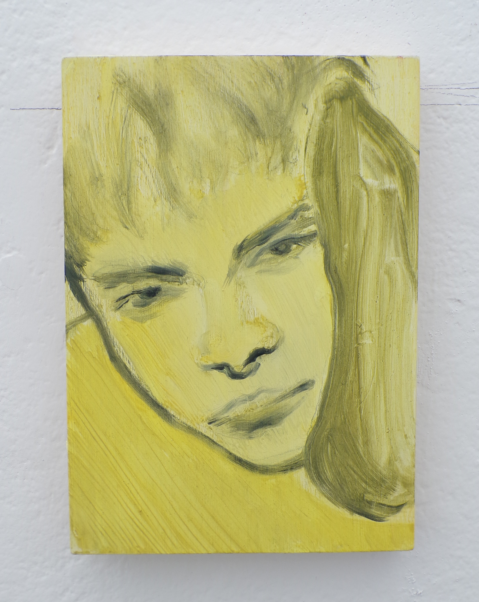
.JPG)

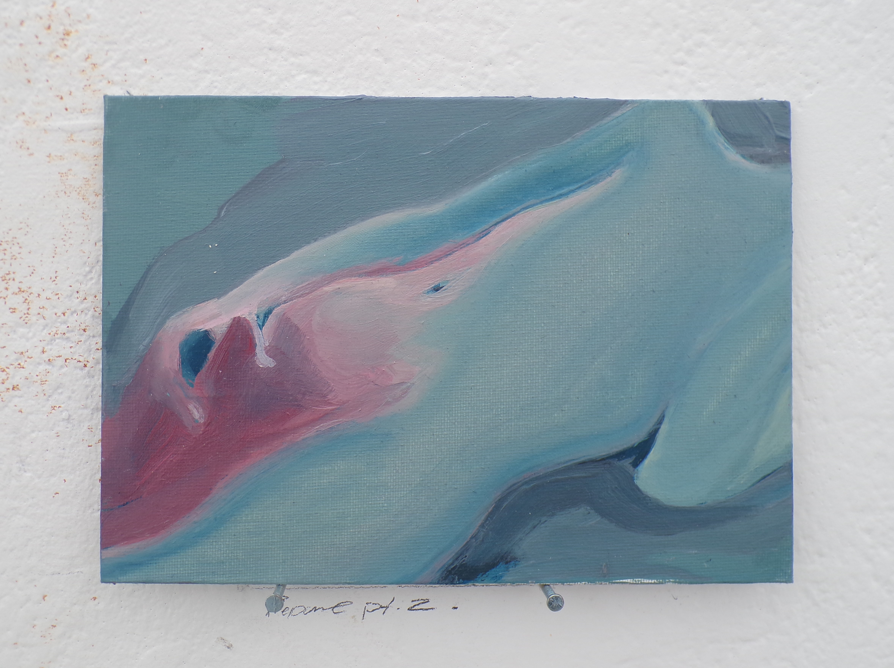
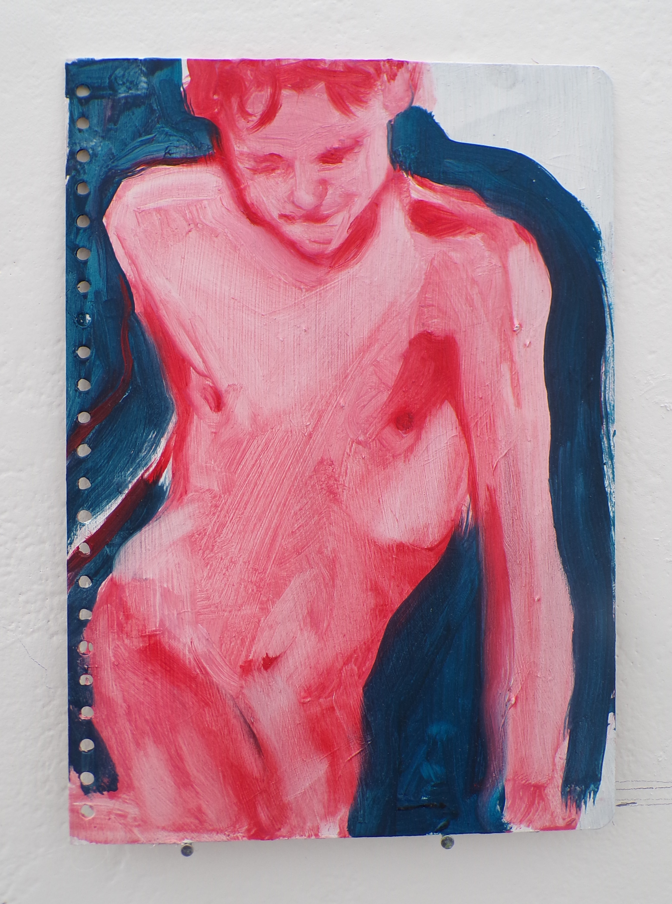
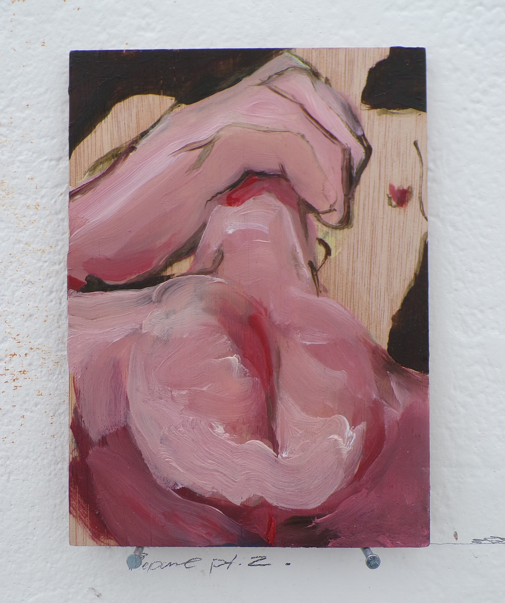
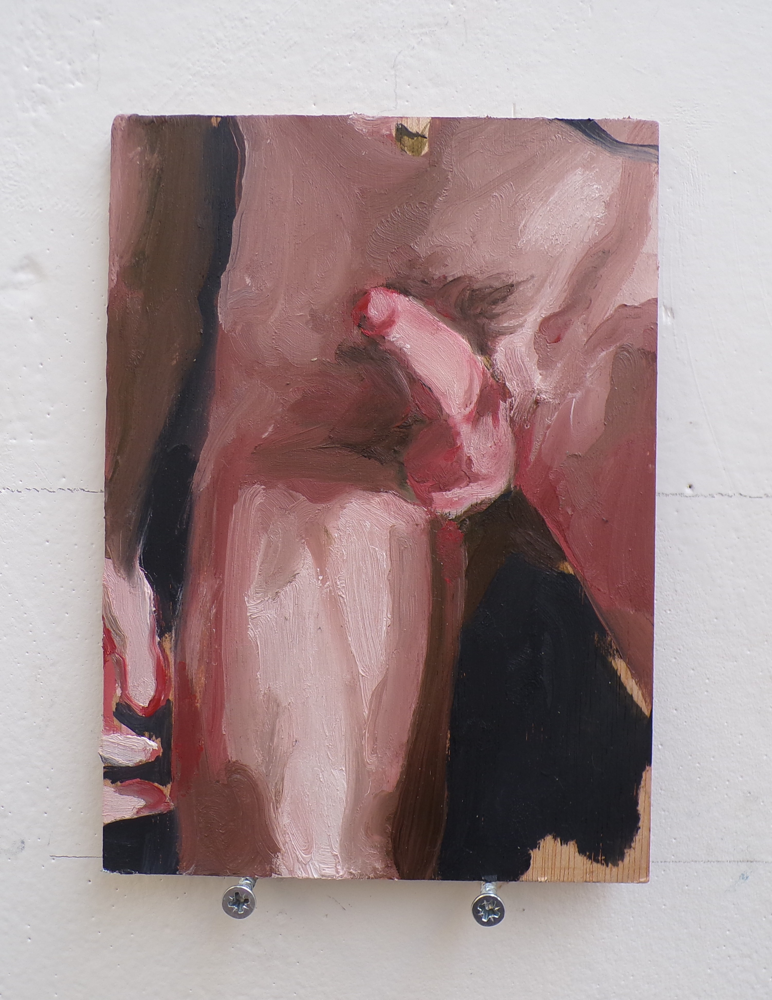
.JPG)
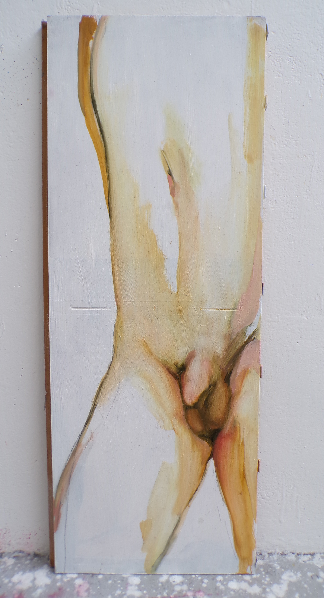
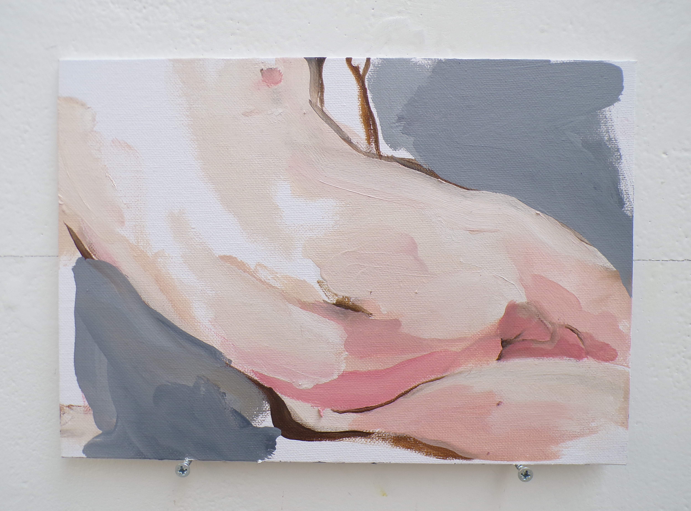
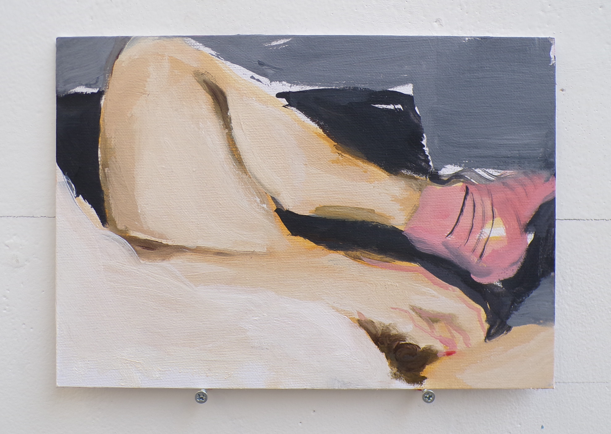
.JPG)
Drawings
Exhibitions
2026 - Espacio Gallery, "Love is Love" Exhibition, London
2026 - University of Brighton Degree show, Brighton

Bio
Casper Little is a Dorset-based painter and early-career exhibiting artist whose practice examines masculinity, intimacy and the politics of visibility. Working primarily from photographs of those close to him, he approaches painting as both documentation and mediation: a way of holding bodies while recognising their inaccessibility.
His work considers visual art as an active agent in the construction of identity, exploring how desire, memory and representation continually shape the ways masculinities are produced, performed and perceived. His practice is informed by queer visual culture, art history and contemporary theories of spectatorship, representation and identity. Through repeated engagement with the male figure, Little examines how masculinity is culturally constructed, sustained and reimagined, questioning inherited visual codes while considering alternative forms of tenderness, vulnerability and embodiment. Rather than offering fixed narratives, his paintings invite the spectator into a space where memory, desire and perception continually reshape one another.
Little graduated with a First-Class BA (Hons) in Fine Art (Painting) from the University of Brighton in 2026. His work has been exhibited in London, Dorset, and in group exhibitions across East Sussex. He continues to develop a research-led painting practice centred on figurative representation, queer visibility and the evolving construction of masculinity in contemporary visual culture.
Contact
Instagram: @Casperfinleyart
Email: casperlittle20@gmail.com